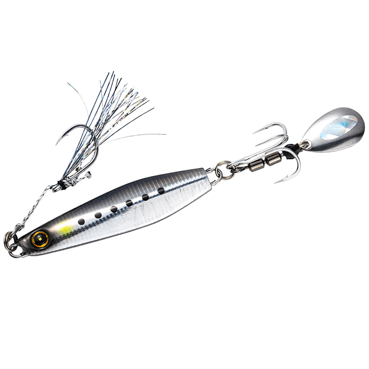
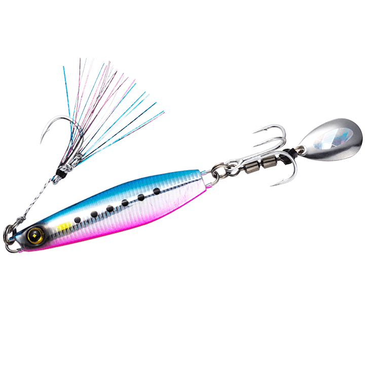
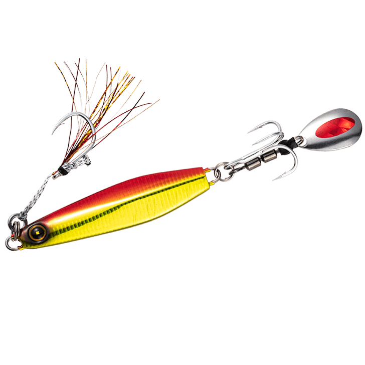
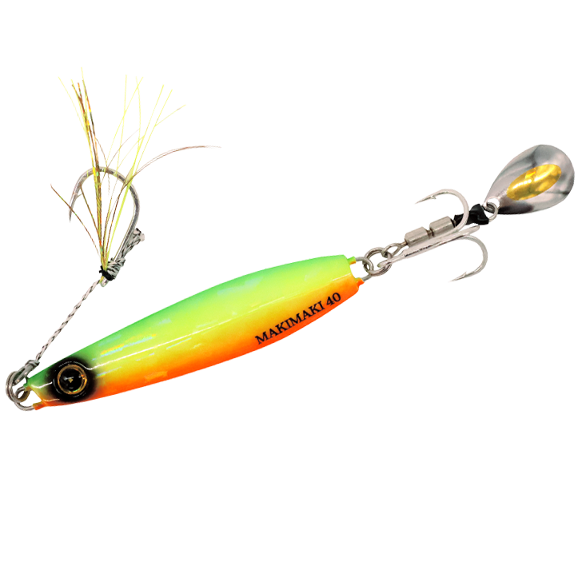

ジャックアイマキマキ
（ブレードジグ）
ジャックアイマキマキはHAYABUSA（ハヤブサ）のブレードジグです。
「巻くだけで魚が釣れる」をコンセプトにした、誰でも手軽に使えるただ巻き専用ジグ。ホロ貼りブレードとSABIKIアシストを標準装備し、巻きスピードを変えるだけでアピールの仕方を変えられるのが最大の魅力です。

画像出典:ハヤブサ公式HP
スペック
- メーカー
- HAYABUSA（ハヤブサ）
- タイプ
- ブレードジグ（ただ巻き専用）
- ウエイト
- 20g／30g／40g／60g／80g
- フック
- リア：ホロ貼りブレード／フロント：SABIKIアシスト
- ターゲット
- 青物・ヒラメ・マゴチ・タチウオ・根魚など
- 価格
- 1,045円〜1,320円（税込）
▼今すぐチェック

ジャックアイマキマキの特徴
巻くだけでOK。ブレードとSABIKIアシストで、初心者でも釣果を出しやすいただ巻き専用ジグ
-
ホロ貼りブレードでフラッシング効果アップ
リアのブレードにホログラムシートを貼り付け、フラッシング効果を向上。巻くだけでブレードが回転し、離れた魚にもルアーの存在をアピールする。
-
スロージグライク形状で、フォールでも食わせる
スロージグのような形状を採用し、スローフォールでフックまでしっかり食わせてバイトミスを減らす。左右で異なるフラッシングが瞬間的な視覚変化を生み、リアクションでスイッチを入れる。
-
ジグカラーにマッチした「SABIKIアシスト」
ジグのカラーに合わせた擬餌付きアシストフックを標準装備。アピール力を高めながら、違和感なくフックを食わせることができる。
ジャックアイマキマキの使い方
基本はキャストして着底させ、ただ巻きで探るだけ。巻きのアクションにこだわって作られているので、特別なロッド操作は必要ない。
アングラーの巻きスピードでアクションが変化するので、スローで反応がなければ速く、速巻きで反応がなければゆっくりと、状況に合わせてアピールを変えていく。着底からの巻き上げ、途中で巻きを止めてフォールを入れるなど、レンジとスピードを変えながら探るのが基本の組み立てです。
ジャックアイマキマキの得意な状況
堤防やサーフから、青物・ヒラメ・タチウオなど幅広い魚をただ巻きで狙いたい状況が最大の出番。
ジャークが苦手な初心者や、子どもと一緒の釣りでも使いやすく、まず1本目のブレードジグとして選びたいルアーです。
ワンポイント
巻きスピードを一定に保つと、ブレードが安定して回りレンジもキープしやすくなります。
ブレードとアシストが絡んだまま投げるとアピールが落ちるので、着水前にサミングしてルアーの姿勢を整えると絡みを減らせます。
ジャックアイマキマキのウエイトの使い分け
| ウエイト | 価格（税込） | 得意な場面 |
|---|---|---|
| 20g | 1,045円 | 浅場の堤防・ライトタックルでの小型青物や根魚 |
| 30g | 1,089円 | サーフ・堤防のヒラメや青物の基準ウエイト |
| 40g | 1,133円 | 飛距離が欲しいサーフや水深のある堤防 |
| 60g | 1,199円 | 潮の速いエリアや深場狙い |
| 80g | 1,320円 | 深場・遠投が必要な青物狙い（一部カラーのみ） |
ジャックアイマキマキは20g〜80gのウエイト展開。水深や潮の速さ、使うタックルに合わせてウエイトを選ぶのが基本だ。
オススメカラー
ジャックアイマキマキは全13色展開。オススメのカラーを厳選して紹介します。

1. ライブリーイワシイワシパターンにマッチするナチュラル系。澄み潮やデイゲームの基準カラーに。

2. ケイムラブルピンイワシブルピンにケイムラをプラスした定番アピール系。青物狙いの1本目に。

3. ケイムラアカキン濁りやローライトに強いアカキン。根魚や濁った日のヒラメ狙いに。

24. トリプルチャートグローチャート×グローで視認性抜群。マズメ時やタチウオ狙いの夜釣りに。
画像出典:ハヤブサ公式HP
ジャックアイマキマキに似ているルアー
-
 Zブレード
ジーク
詳細はこちら＞
Zブレード
ジーク
詳細はこちら＞
亜鉛合金ボディのブレード付きメタルジグ。巻くだけでブレードのフラッシングで誘い、ゆっくりしたフォールでも食わせられる。ジャックアイマキマキで反応が落ちた時の持ち替え候補。
-
 ビッグバッカー Eブレード
ジャッカル
詳細はこちら＞
ビッグバッカー Eブレード
ジャッカル
詳細はこちら＞
「ただ巻きでOK」のジャッカルのブレードジグ。堤防での使用を想定したハイバランス設計で、足場の高い場所でも足元までレンジをキープしやすい。ただ巻きで使える点がマキマキと共通する。
-
 ボンバースピン
メジャークラフト
詳細はこちら＞
ボンバースピン
メジャークラフト
詳細はこちら＞
超スピード巻きでもブレない実釣主義のサワラジグ。高速巻きでサワラ・サゴシを狙う時に、マキマキと並べて使い分けたい1本。